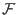

Given that our quantum memory register differs from a classical one in that it can store a superposition of the base states of the register, one might wonder what this implies as to the efficiency of quantum computing. The study of quantum computing is relatively new, most give credit to Richard Feynman for being the first to suggest that there were tasks that a quantum computer could perform exponentially better than a classical computer. Feynman observed that a classical computer could not simulate a quantum mechanical system without suffering from exponential slowdown. At the same time he hinted that perhaps by using a device whose behavior was inherently quantum in nature one could simulate such a system without this exponential slowdown. (Feynman)
Several quantum algorithms rely on something called quantum parallelism. Quantum parallelism arises from the ability of a quantum memory register to exist in a superposition of base states. A quantum memory register can exist in a superposition of states, each component of this superposition may be thought of as a single argument to a function. A function performed on the register in a superposition of states is thus performed on each of the components of the superposition, but this function is only applied one time. Since the number of possible states is 2n where n is the number of qubits in the quantum register, you can perform in one operation on a quantum computer what would take an exponential number of operations on a classical computer. This is fantastic, but the more superposed states that exist in you register, the smaller the probability that you will measure any particular one will become.
As an example suppose that you are using a quantum computer to calculate the function (x) = 2*x mod 7, for x integers between 0 and 7 inclusive. You could prepare a quantum register that was in a equally weighted superposition of the states 0-7. Then you could perform the 2*x mod 7 operation once, and the register would contain the equally weighted superposition of 1,2,4,6,1,3,5,0 states, these being the outputs of the function 2*x mod 7 for inputs 0 - 7. When measuring the quantum register you would have a 2/8 chance of measuring 1, and a 1/8 chance of measuring any of the other outputs. It would seem that this sort of parallelism is not useful, as the more we benefit from parallelism the less likely we are to measure a value of a function for a particular input. Some clever algorithms have been devised, most notably by Peter Shor and L. K. Grover which succeed in using quantum parallelism on a function where they are interested in some property of all the inputs, not just a particular one.